Text mining sentiment analysis
In this section I wanted to post a Text Mining example about Sentimental Analysis on Twitter using Natural Language Processing tools. In this case we are going to test this tools with 1008 tweets in Spanish from twitter and train two different models using words frequencies as vectores (bag of words), a Naive-Bayes model and a SVM model.
1. Loading Data
# Loading Data
corpus_path = r"CorpusTrainTASS"
tweets_data = load_files(corpus_path, encoding='utf-8')
X, y = tweets_data.data, tweets_data.target
sys.stdout.flush()
sys.stderr.flush()
# print('Files Loaded', '\n')
print(X[0])
'@sosagraphs Pues tan sencillo porque en su dÃa me puse a hacerlo y es de lo que mas encargos me hacen, aparte tengo mas estilos crack '
df_tweets_en = pd.read_csv('helpers/tweets_en.csv')
list_tweets_en = list(df_tweets_en.tweets_en)
print(list_tweets_en[:2])
['For @sosagraphs so simple because at the time I started to do and what makes me more commissions, other styles have more crack', '1477. No but because there just confi']
2. Naive-Bayes classification model
2.1 Naive-Bayes script function
from sklearn.feature_extraction.text import CountVectorizer
from sklearn.feature_extraction.text import TfidfTransformer
from sklearn.model_selection import train_test_split
from sklearn.naive_bayes import MultinomialNB
from sklearn.metrics import classification_report, confusion_matrix, accuracy_score
from sklearn.metrics import plot_confusion_matrix
def nbayes(X, Y):
plt.style.use('default')
labels = ['Negative', 'Neutral', 'None', 'Positive']
def basic_processing(X):
documents = []
for sen in range(0, len(X)):
document = str(X[sen])
documents.append(document)
return documents
documents = basic_processing(X)
print('Documents processed', '\n')
vectorizer = CountVectorizer()
X = vectorizer.fit_transform(documents).toarray()
# print(X)
print('Vectorizer Done', '\n')
tfidfconverter = TfidfTransformer()
X = tfidfconverter.fit_transform(X).toarray()
print('Starting trainning', '\n')
# The data is divided into 20% test set and 80% training set.
X_train, X_test, y_train, y_test = train_test_split(X, y, test_size=0.2, random_state=0)
# Training the model
clf = MultinomialNB().fit(X_train, y_train)
y_pred = clf.predict(X_test)
# Printing results
print("------------------------------------------")
print(classification_report(y_test,y_pred))
print("------------------------------------------")
print("accuracy",accuracy_score(y_test, y_pred))
# Plot non-normalized confusion matrix
titles_options = [("Confusion matrix, without normalization", None),
("Normalized confusion matrix", 'true')]
for title, normalize in titles_options:
disp = plot_confusion_matrix(clf, X_test, y_test,
display_labels=labels,
cmap=plt.cm.Blues,
normalize=normalize)
disp.ax_.set_title(title)
plt.show()
return accuracy_score(y_test, y_pred)
2.2 Training the clasificator in Spanish
Training the Naive-Bayes clasificator with no preprocessing in Spanish
tweets_es = X
target = y
# acc = nbayes(tweets_es, target)
Documents processed
Vectorizer Done
Starting trainning
------------------------------------------
precision recall f1-score support
0 0.38 1.00 0.55 72
1 0.00 0.00 0.00 31
2 0.00 0.00 0.00 31
3 0.82 0.13 0.23 68
accuracy 0.40 202
macro avg 0.30 0.28 0.19 202
weighted avg 0.41 0.40 0.27 202
------------------------------------------
accuracy 0.400990099009901
/home/carlos/.local/lib/python3.6/site-packages/sklearn/metrics/_classification.py:1272: UndefinedMetricWarning: Precision and F-score are ill-defined and being set to 0.0 in labels with no predicted samples. Use `zero_division` parameter to control this behavior.
_warn_prf(average, modifier, msg_start, len(result))
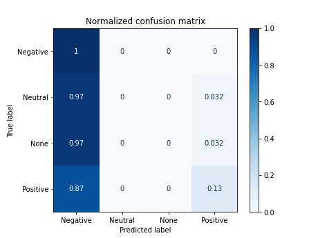
df_results_bayes = pd.DataFrame({'model': ['n.bayes'], 'improve': ['default tweets_es'], 'accuracy': [acc]})
2.3 Training the clasificator in English
acc = nbayes(list_tweets_en, target)
Documents processed
Vectorizer Done
Starting trainning
------------------------------------------
precision recall f1-score support
0 0.38 0.99 0.55 72
1 0.00 0.00 0.00 31
2 0.00 0.00 0.00 31
3 0.71 0.15 0.24 68
accuracy 0.40 202
macro avg 0.27 0.28 0.20 202
weighted avg 0.38 0.40 0.28 202
------------------------------------------
accuracy 0.400990099009901
/home/carlos/.local/lib/python3.6/site-packages/sklearn/metrics/_classification.py:1272: UndefinedMetricWarning: Precision and F-score are ill-defined and being set to 0.0 in labels with no predicted samples. Use `zero_division` parameter to control this behavior.
_warn_prf(average, modifier, msg_start, len(result))
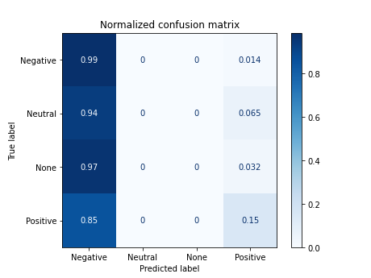
df_results_bayes = pd.DataFrame({'model': ['n.bayes'], 'improve': ['default tweets_en'], 'accuracy': [acc]})
3. Declaring useful functions
3.1 Declaring NLP functions
def get_tags(text, nlp):
nlp.max_length = 5000000
# tokens generator
doc = nlp(text, disable=['parser', 'ner'])
tags = [t.pos__ for t in doc if
(t.is_stop is False and t.is_punct is False and not t.text.isspace())]
tags = list(set(tokens))
return tags
def get_stops(text, nlp):
nlp.max_length = 5000000
text = text.lower()
# stops generator
doc = nlp(text)
stops = [t.text for t in doc if t.is_stop]
return stops
def get_tokens(text, nlp):
nlp.max_length = 5000000
# stops = nlp.Defaults.stop_words
text = text.lower()
# tokens generator
doc = nlp(text, disable=['parser', 'ner'])
tokens = [t.text for t in doc if
(t.is_stop is False and t.is_punct is False and not t.text.isspace())]
tokens = list(set(tokens))
return tokens
def get_lemas(text, nlp):
nlp.max_length = 5000000
text = text.lower()
# tokens generator
doc = nlp(text, disable=['parser', 'ner'])
tokens = [t.lemma_ for t in doc if
(t.is_stop is False and t.is_punct is False and not t.text.isspace())]
tokens = list(set(tokens))
return tokens
def get_chunks(text, nlp):
text = text.lower()
# tokens generator
doc = nlp(text)
chunks = [chunk for chunk in doc.noun_chunks]
if len(chunks) == 0:
chunks = ''
return chunks
3.2 Declaring other functions
def counter(lst):
output = {}
for value in lst:
count = len([i for i in lst if i == value])
output[value] = count
return output
def translate(string):
translator = Translator()
translated = translator.translate(string, src = 'en', dest='es').text
time.sleep(2)
return translated
def cleaner(lst, pattern):
pattern = re.compile(pattern)
clean = []
for item in lst:
if pattern.match(item):
clean.append('')
else:
clean.append(item)
return clean
4. Loading Spacy models and filtering stopwords
# loading spacy module
nlp_es_spacy = spacy.load('es_core_news_md')
nlp_en_spacy = spacy.load('en_core_web_lg')
nlp_es = spacy.load('es_core_news_md')
nlp_en = spacy.load('en_core_web_lg')
# Loading selected stopwords in Spanish
with open('helpers/false_stops_es.json', 'r') as myfile:
data=myfile.read()
false_stops_es = json.loads(data)
# Loading selected stopwords in English
with open('helpers/false_stops_en.json', 'r') as myfile:
data=myfile.read()
false_stops_en = json.loads(data)
# Excluding selected stopwords in Spanish
for fstop in false_stops_es:
nlp_es.vocab[fstop].is_stop = False
# Excluding selected stopwords in English
for fstop in false_stops_en:
nlp_en.vocab[fstop].is_stop = False
5. Generating EDA Data Frame
tweets_es = X
tweets_en = list_tweets_en
lemas_es = []
lemas_en = []
chunks_es = []
chunks_en = []
target = y
# Processing tokens with default stops
tokens_es = [get_tokens(tweet, nlp_es_spacy) for tweet in tweets_es]
tokens_en = [get_tokens(tweet, nlp_en_spacy) for tweet in tweets_en]
# Processing tokens with selected stops
tokens_es_selected = [get_tokens(tweet, nlp_es) for tweet in tweets_es]
tokens_en_selected = [get_tokens(tweet, nlp_en) for tweet in tweets_en]
# Processing lemas
lemas_es = [get_lemas(tweet, nlp_es) for tweet in tweets_es]
lemas_en = [get_lemas(tweet, nlp_en) for tweet in tweets_en]
# Procesing stops
stops_es = [get_stops(tweet, nlp_es_spacy) for tweet in tweets_es]
stops_en = [get_stops(tweet, nlp_en_spacy) for tweet in tweets_en]
# Data frame creation
df = pd.DataFrame({'tweets_es': tweets_es,
'tweets_en': tweets_en,
'tokens_es': tokens_es,
'tokens_es*': tokens_es_selected,
'tokens_en': tokens_en,
'tokens_en*': tokens_en_selected,
'lemas_es': lemas_es,
'lemas_en': lemas_en,
'stops_es': stops_es,
'stops_en': stops_en,
'target': target})
library(kableExtra)
df_eda <- read.csv('df_eda_01.csv')
head(df_eda, 3) %>% kable() %>% kable_styling() %>% scroll_box(width = '100%')
| X |
tweets_es |
tweets_en |
tokens_es |
tokens_es. |
tokens_en |
tokens_en. |
lemas_es |
lemas_en |
stops_es |
stops_en |
target |
| 0 |
@sosagraphs Pues tan sencillo porque en su dÃa me puse a hacerlo y es de lo que mas encargos me hacen, aparte tengo mas estilos crack |
For @sosagraphs so simple because at the time I started to do and what makes me more commissions, other styles have more crack |
['aparte', 'puse', 'encargos', 'y', 'a', 'sencillo', 'crack', '@sosagraphs', 'estilos'] |
['aparte', 'puse', 'hacerlo', 'encargos', 'y', 'a', 'sencillo', 'crack', 'porque', '@sosagraphs', 'estilos'] |
['makes', 'commissions', 'started', 'styles', 'time', 'simple', '@sosagraphs', 'crack'] |
['makes', 'because', 'commissions', 'started', 'styles', 'time', 'simple', '@sosagraphs', 'crack'] |
['hacerlo', 'encargo', 'y', 'a', 'sencillo', 'poner', 'porque', 'apartar', 'estilo', '@sosagraphs', 'crack'] |
['because', 'make', 'commission', '@sosagraph', 'time', 'style', 'start', 'simple', 'crack'] |
['pues', 'tan', 'porque', 'en', 'su', 'dÃa', 'me', 'hacerlo', 'es', 'de', 'lo', 'que', 'mas', 'me', 'hacen', 'tengo', 'mas'] |
['for', 'so', 'because', 'at', 'the', 'i', 'to', 'do', 'and', 'what', 'me', 'more', 'other', 'have', 'more'] |
3 |
| 1 |
1477. No pero porque apenas hay confi |
1477. No but because there just confi |
['1477', 'confi'] |
['1477', 'no', 'confi', 'porque'] |
['1477', 'confi'] |
['1477', 'confi', 'because'] |
['1477', 'no', 'confi', 'porque'] |
['1477', 'confi', 'because'] |
['no', 'pero', 'porque', 'apenas', 'hay'] |
['no', 'but', 'because', 'there', 'just'] |
0 |
| 2 |
Vale he visto la tia bebiendose su regla y me hs dado muchs grima |
It've seen the aunt drinking his rule and hs given me muchs Grima |
['regla', 'tia', 'y', 'bebiendose', 'vale', 'hs', 'muchs', 'grima', 'visto'] |
['regla', 'tia', 'dado', 'y', 'bebiendose', 'vale', 'hs', 'muchs', 'grima', 'visto'] |
['aunt', 'rule', 'seen', 'given', "it've", 'hs', 'muchs', 'grima', 'drinking'] |
['aunt', 'rule', 'seen', 'his', "it've", 'given', 'hs', 'muchs', 'grima', 'drinking'] |
['tia', 'y', 'bebiendose', 'valer', 'hs', 'reglar', 'muchs', 'grima', 'vestir', 'dar'] |
['aunt', 'see', 'rule', '-PRON-', "it've", 'hs', 'muchs', 'grima', 'drink', 'give'] |
['he', 'la', 'su', 'me', 'dado'] |
['the', 'his', 'and', 'me'] |
0 |
6. Exploration Data Analysis
6.1 Visualization functions
import seaborn as sns
def countplot(data, column = 'target', title = 'Countplot', xlab = 'class', ylab = 'Number of tweets'):
labels = ['Negative', 'Neutral', 'None', 'Positive']
plt.style.use('ggplot')
plt.figure(figsize=(14, 11))
# Bars plot
plt.subplot(2, 2, 1)
ax1 = sns.countplot(x=column, data=data)
ax1.set_ylabel(ylab)
ax1.set_xlabel(xlab)
ax1.set_xticklabels(labels)
ax1.title.set_text(title)
# Pie plot
total = len(data)
data = list(data.groupby(column)[column].count()/total)
ax2 = plt.subplot(2, 2, 2)
ax2.pie(data, labels=labels, autopct='%1.1f%%', startangle=90)
ax2.title.set_text(title + ' (%)')
plt.show()
def comparison_plot(df, colname, title = ''):
if title == '':
title = 'Number of tweets VS ' + colname
filtered = df[df[colname] != ''].groupby('target').target.count()
total_tweets = df.groupby('target').target.count()
# Plotting data
labels = ['Negative', 'Neutral', 'None', 'Positive']
plt.style.use('ggplot')
plt.figure(figsize=(14, 11))
fig, ax = plt.subplots()
x = np.arange(4)
width = 0.3
rects1 = ax.bar(x - width/2, total_tweets, width, label='tweets')
rects2 = ax.bar(x + width/2, filtered, width, label= 'tweets with ' + colname)
# Setting labels
ax.set_ylabel('Frequency')
ax.set_title(title)
ax.set_xticks(x)
ax.set_xticklabels(labels)
ax.legend()
plt.show()
def only_mentions(lst):
pattern = re.compile('\.?@\w+')
mentions = [mention for mention in lst if pattern.match(mention)]
if len(mentions) == 0:
mentions = ''
return mentions
def only_hash(string):
pattern = re.compile('#\w+')
hashtags = pattern.findall(string)
hashtags = [i[1:] for i in hashtags]
if len(hashtags) == 0:
hashtags == ''
return hashtags
def hash2word(hashtag):
words = []
b = False
word = ''
if hashtag == '':
words = ''
else:
for i in range(len(hashtag)):
letter = hashtag[i]
if letter.isupper() and i != 0 and b == False:
b = True
word = word.lower()
words.append(word)
word = ''
word += letter
else:
b = False
word += letter
word.lower()
words.append(word)
words = ' '.join(words)
return words
def no_mentions(lst, lang = 'es'):
if lang == 'es':
rep = 'usuario'
else:
rep = 'user'
pattern = re.compile('@\w+')
clean = [lema for lema in lst]
for lema in lst:
if pattern.match(lema):
clean.append(lema)
else:
clean.append(lema)
return clean
def freq_table(df, col_name = 'items'):
items = []
targets = []
column = df.iloc[:, 0]
target = df.iloc[:, 1]
for clm, tg in zip(column, target):
for item in clm:
items.append(item)
targets.append(tg)
df_freq = pd.DataFrame({col_name: items, 'target': targets})
return df_freq
countplot(df, title = 'Number of tweets by category')
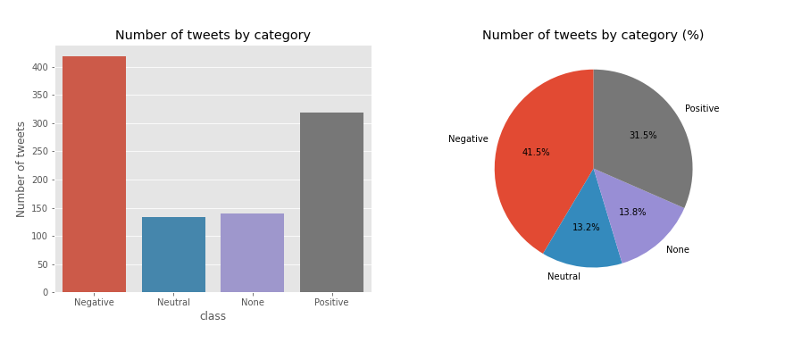
6.3 Stopwords analysis
df_stops_freq_es = freq_table(df[['stops_es', 'target']], 'stopwords')
df_stops_freq_en = freq_table(df[['stops_en', 'target']], 'stopwords')
# df_stops_freq_es.head()
countplot(df_stops_freq_es, title = 'Number of stopwords by category')
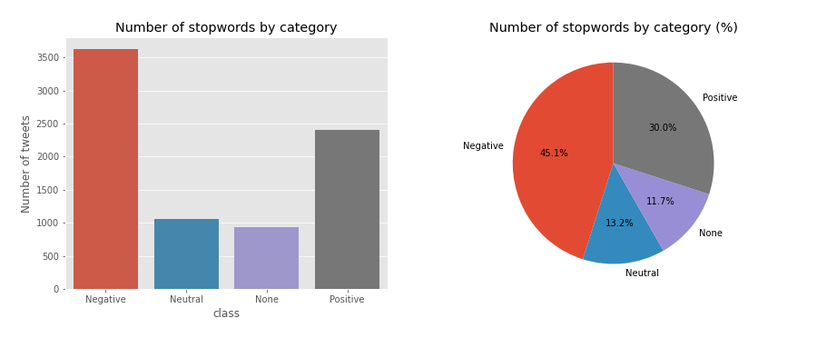
6.3.1 Clasifiying stopwords
negative_stops_es = df_stops_freq_es[df_stops_freq_es.target == 0]\
.groupby('stopwords').target.count().reset_index().sort_values(by=['target'], ascending = False)\
.reset_index(drop=True).rename(columns={'target': 'freq'})
negative_stops_es.head(5)
stopwords freq
0 que 250
1 de 226
2 no 207
3 me 154
4 la 134
negative_stops_en = df_stops_freq_en[df_stops_freq_en.target == 0]\
.groupby('stopwords').target.count().reset_index().sort_values(by=['target'], ascending = False)\
.reset_index(drop=True).rename(columns={'target': 'freq'})
positive_stops_es = df_stops_freq_es[df_stops_freq_es.target == 3]\
.groupby('stopwords').target.count().reset_index().sort_values(by=['target'], ascending = False)\
.reset_index(drop=True).rename(columns={'target': 'freq'})
# positive_stops_es.head(5)
stopwords freq
0 de 152
1 que 138
2 la 94
3 el 84
4 en 78
positive_stops_en = df_stops_freq_en[df_stops_freq_en.target == 3]\
.groupby('stopwords').target.count().reset_index().sort_values(by=['target'], ascending = False)\
.reset_index(drop=True).rename(columns={'target': 'freq'})
6.3.2 Filtering important stopwords
threshold = 0.3
df_merged_es = pd.merge(negative_stops_es, positive_stops_es, on='stopwords', how = 'outer')
df_merged_es = df_merged_es[(df_merged_es.freq_x.isna()) | (df_merged_es.freq_y.isna()) | (df_merged_es.freq_x/df_merged_es.freq_y <= threshold) | (df_merged_es.freq_y/df_merged_es.freq_x <= threshold)]
df_merged_es.head()
stopwords freq_x freq_y
2 no 207.0 60.0
16 porque 43.0 10.0
39 ni 16.0 1.0
40 le 16.0 3.0
45 están 15.0 3.0
threshold = 0.3
df_merged_en = pd.merge(negative_stops_en, positive_stops_en, on='stopwords', how = 'outer')
df_merged_en = df_merged_en[(df_merged_en.freq_x.isna()) | (df_merged_en.freq_y.isna()) | (df_merged_en.freq_x/df_merged_en.freq_y <= threshold) | (df_merged_en.freq_y/df_merged_en.freq_x <= threshold)]
merge_negative_stops_en = df_merged_en.sort_values(by='freq_x', ascending=False)
merge_negative_stops_es = df_merged_es.sort_values(by='freq_x', ascending=False)
# merge_negative_stops_es.head()
stopwords freq_x freq_y
2 no 207.0 60.0
16 porque 43.0 10.0
39 ni 16.0 1.0
40 le 16.0 3.0
45 están 15.0 3.0
false_stops_es = list(df_merged_es[(df_merged_es.freq_x > 1) | (df_merged_es.freq_y >1)].stopwords)
false_stops_en = list(df_merged_en[(df_merged_en.freq_x > 1) | (df_merged_en.freq_y >1)].stopwords)
# Saving false stopwords
# with open('helpers/false_stops_en.json', 'w', encoding='utf-8') as f:
# json.dump(false_stops_en, f, ensure_ascii=False, indent=4)
# with open('helpers/false_stops_es.json', 'w', encoding='utf-8') as f:
# json.dump(false_stops_es, f, ensure_ascii=False, indent=4)
# false_stops_es[:5]
['no', 'porque', 'ni', 'le', 'están']
6.4 Normalizing laughing ‘jaja’
jaja_checker = []
tweets_jaja_es = []
tweets_jaja_en = []
pattern_es = re.compile('j\w*j\w*j\w*|a*ja+j[ja]*|lo+l')
pattern_en = re.compile('a*ha+h[ha]*|lo+l')
for index, row in df.iterrows():
tweet_es = row.tweets_es
tweet_en = row.tweets_en
# find_en = re.findall('a*ha+h[ha]* | lo+l', tweet_en)
finded = re.findall('j\w*j\w*j\w*|a*ja+j[ja]*|lo+l', tweet_es)
if finded != []:
new_tweet_es = pattern_es.sub(' risa ', tweet_es)
new_tweet_en = pattern_en.sub(' laugh ', tweet_en)
tweets_jaja_es.append(new_tweet_es)
tweets_jaja_en.append(new_tweet_en)
jaja_checker.append(True)
else:
tweets_jaja_es.append(tweet_es)
tweets_jaja_en.append(tweet_en)
jaja_checker.append('')
df['tweets_es'] = tweets_jaja_es
df['tweets_en'] = tweets_jaja_en
df['jaja_checker'] = jaja_checker
# print(tweets_jaja_es[22:24])
# print(tweets_jaja_en[22:24])
["@ElSpeaker Life takes us through inextricable ways laugh I'm glad you have molado today's program", '@ Mamiauryner1 especially hope to have it with my laugh child. thanks beautiful ♥']
tokens_jaja_es = [get_tokens(tweet, nlp_es) for tweet in tweets_jaja_es]
tokens_jaja_en = [get_tokens(tweet, nlp_en) for tweet in tweets_jaja_en]
df['tokens_jaja_es'] = tokens_jaja_es
df['tokens_jaja_en'] = tokens_jaja_en
lemas_jaja_es = [get_lemas(tweet, nlp_es) for tweet in tweets_jaja_es]
lemas_jaja_en = [get_lemas(tweet, nlp_en) for tweet in tweets_jaja_en]
df['lemas_jaja_es'] = lemas_jaja_es
df['lemas_jaja_en'] = lemas_jaja_en
df_eda <- read.csv('df_eda_02.csv')
head(df_eda) %>% kable() %>% scroll_box(width = '100%')
| X |
tweets_es (resumen) |
tweets_en (resumen) |
tokens_es |
tokens_en |
lemas_es |
lemas_en |
stops_es |
stops_en |
target |
jaja_checker |
tokens_jaja_es |
tokens_jaja_en |
lemas_jaja_es |
lemas_jaja_en |
| 0 |
@sosagraphs Pues tan sencillo porque en su dÃa me puse a hacerlo... |
For @sosagraphs so simple because at the time I started to do... |
['estilos', 'y', 'encargos', ...] |
['commissions', 'crack', 'time', ...] |
['hacerlo', 'porque', 'encargo', ...] |
['style', 'crack', 'time', ...] |
['pues', 'tan', 'porque', ...] |
['for', 'so', 'because', ...] |
3 |
— |
['hacerlo', 'porque', 'estilos', ...] |
['commissions', 'crack', 'time', ...] |
['hacerlo', 'porque', 'encargo', ...] |
['style', 'crack', 'time', ...] |
| 1 |
1477. No pero porque apenas hay confi |
1477. No but because there just confi |
['confi', '1477'] |
['confi', '1477'] |
['confi', 'porque', '1477', ...] |
['because', 'confi', '1477'] |
['no', 'pero', 'porque', ...] |
['no', 'but', 'because', ...] |
0 |
— |
['confi', 'porque', '1477', ...] |
['because', 'confi', '1477'] |
['confi', 'porque', '1477', ...] |
['because', 'confi', '1477'] |
| 2 |
Vale he visto la tia bebiendose su regla y me hs dado muchs grima |
It’ve seen the aunt drinking his rule and hs given me muchs grima |
['bebiendose', 'hs', 'grima', ...] |
['aunt', 'rule', 'hs', ...] |
['bebiendose', 'hs', 'grima', ...] |
['aunt', 'rule', 'hs', ...] |
['he', 'la', 'su', ...] |
['the', 'his', 'and', ...] |
0 |
— |
['bebiendose', 'hs', 'grima', ...] |
['aunt', 'rule', 'hs', ...] |
['bebiendose', 'hs', 'grima', ...] |
['aunt', 'rule', 'hs', ...] |
| 3 |
@Baronachor El concepto es de lo más bonico, pero de eso a serlo hay un trecho |
@Baronachor The concept is most bonico, but that there is a stretch to be |
['bonico', 'concepto', 'serlo', ...] |
['bonico', 'concept', 'stretch', ...] |
['bonico', 'concepto', 'serlo', ...] |
['bonico', 'stretch', 'concept', ...] |
['el', 'es', 'de', 'lo', ...] |
['the', 'is', 'most', 'but', ...] |
1 |
— |
['bonico', 'concepto', 'serlo', ...] |
['bonico', 'stretch', 'concept', ...] |
['bonico', 'concepto', 'serlo', ...] |
['bonico', 'stretch', 'concept', ...] |
6.5 Lemas Analysis
6.5.1 Lemas by frequency
df_lemas_freq = freq_table(df[['lemas_es', 'target']], 'lemas')
df_lemas_freq.head()
lemas target
0 a 3
1 porque 3
2 @sosagraphs 3
3 sencillo 3
4 crack 3
6.5.2 Most repeated lemas
all_lemas = df_lemas_freq.groupby('lemas').target.count().reset_index().sort_values(by=['target'], ascending = False)\
.reset_index(drop=True).rename(columns={'target': 'freq'})
all_lemas.head()
lemas freq
0 y 317
1 no 284
2 a 274
3 porque 62
4 gracia 54
Most repeated negative lemas
negative_lemas = df_lemas_freq[df_lemas_freq.target == 0]\
.groupby('lemas').target.count().reset_index().sort_values(by=['target'], ascending = False)\
.reset_index(drop=True).rename(columns={'target': 'freq'})
negative_lemas.head()
lemas freq
0 no 176
1 y 150
2 a 118
3 porque 41
4 ser 27
Most repeated positive lemas
positive_lemas = df_lemas_freq[df_lemas_freq.target == 3]\
.groupby('lemas').target.count().reset_index().sort_values(by=['target'], ascending = False)\
.reset_index(drop=True).rename(columns={'target': 'freq'})
positive_lemas.head(5)
lemas freq
0 y 100
1 a 77
2 no 50
3 gracia 37
4 bueno 34
6.6 User mentions analysis (@user)
# Saving mentions by tweet in the data frame
mentions = [only_mentions(lema) for lema in df.lemas_es]
df['mentions'] = mentions
# df.iloc[0:4, [0, 1, -1]]
df_eda_3 <- read.csv('df_eda_03.csv')
df_eda_3 %>% kable()
| X |
tweets_es (resumen) |
tweets_en (resumen) |
mentions |
| 0 |
@sosagraphs Pues tan sencillo porque en su dÃa me puse a hacerlo y es de lo que más encargos me hacen... |
For @sosagraphs so simple because at the time I started to do and what makes me more commissions... |
['@sosagraphs'] |
| 1 |
No pero porque apenas hay confi |
No but because there just confi |
— |
| 2 |
Vale he visto la tÃa bebiéndose su regla y me hs dado muchs grima |
It’ve seen the aunt drinking his rule and hs given me muchs Grima |
— |
| 3 |
@Baronachor El concepto es de lo más bonico, pero de eso a serlo hay un trecho |
@Baronachor The concept is most bonico, but that there is a stretch to be |
['@baronachor'] |
df_mentions = df[df.mentions != ''].reset_index(drop=True)
countplot(df_mentions, title = 'Number of mentions by tweet classification')
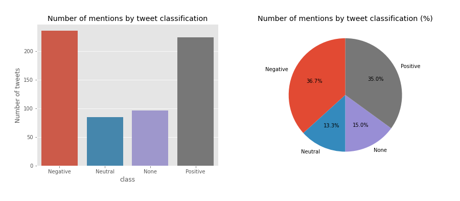
comparison_plot(df, 'mentions')
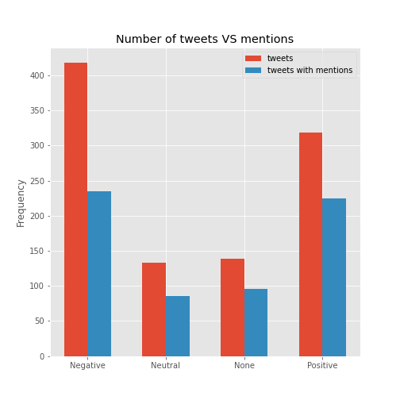
hashtags = [only_hash(tweet) if len(only_hash(tweet)) != 0 else '' for tweet in df.tweets_es]
df['hashtags'] = hashtags
# df.iloc[[7, 15, 26], [0, 2, -1]]
df_eda_4 <- read.csv('df_eda_04.csv')
df_eda_4 %>% kable()
| X |
tweets_es (resumen) |
tokens_es |
hashtags |
| 7 |
@Diego_FDM @el_pais La noticia perfecta para #NotasDelMisterio |
['notasdelmisterio', 'noticia', '@diego_fdm', 'perfecta', '@el_pais'] |
['NotasDelMisterio'] |
| 15 |
Hoy microaventura en #kayak con dos expertos kayakistas RÃa de Villaviciosa. @ El Puntal… https://t.co/y7j88bRmYK |
['microaventura', 'expertos', 'kayak', 'villaviciosa', 'puntal', 'https://t.co/y7j88brmyk', 'kayakistas', 'rÃa'] |
['kayak'] |
| 26 |
6 momentos en los que usar lentes de contacto es simplemente mejor ¡Feliz lunes! https://t.co/x06G1nkaH1 #optometria #lentesdecontacto |
['feliz', 'contacto', 'https://t.co/x06g1nkah1', 'lentesdecontacto', '6', 'simplemente', 'optometria', 'momentos', 'lunes', 'lentes'] |
['optometria', 'lentesdecontacto'] |
# Hashtags by frecuency and tweet
df_hashtags = df[df.hashtags != '']
countplot(df_hashtags, title = 'Number of hashtags by tweet classification')
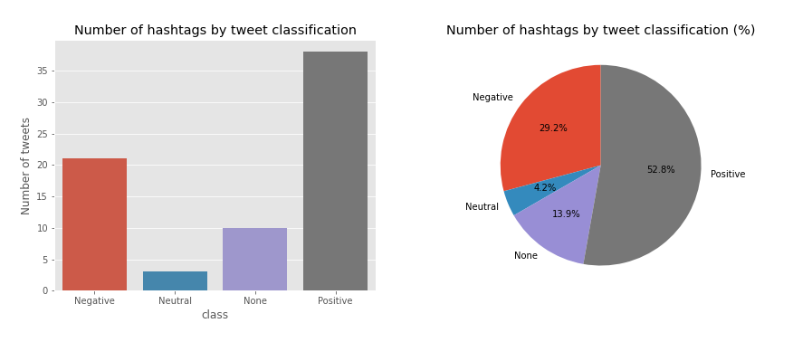
comparison_plot(df, 'hashtags')
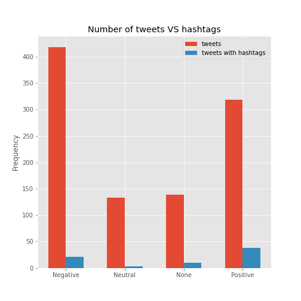
df_hashtags_freq = freq_table(df[['hashtags', 'target']], 'hashtags')
df_hashtags_freq.head()
hashtags target
0 playa 3
1 NotasDelMisterio 3
2 kayak 3
3 optometria 2
4 lentesdecontacto 2
negative_hashtags = df_hashtags_freq[df_hashtags_freq.target == 0].reset_index(drop=True)\
.groupby('hashtags').target.count().reset_index().sort_values(by=['target'], ascending = False)\
.reset_index(drop=True).rename(columns={'target': 'freq'})
negative_hashtags.head(10)
hashtags freq
0 askalvarogango 2
1 Algeciras 1
2 Sangüesa 1
3 rcde 1
4 justice4hombres 1
5 investiduraRajoy 1
6 emprendedores 1
7 dgtes 1
8 crisis 1
9 corrupciónPP 1
positive_hashtags = df_hashtags_freq[df_hashtags_freq.target == 3]\
.groupby('hashtags').target.count().reset_index().sort_values(by=['target'], ascending = False)\
.reset_index(drop=True).rename(columns={'target': 'freq'})
hashtags freq
0 HableConEllas 3
1 AcapulcoShore3 1
2 enlacabezaNo 1
3 TonyYSorayaEnMalaga 1
4 TrendingEstreno 1
5 WillyToledo 1
6 ahÃlodejo 1
7 altafitdonosti 1
8 askLFI 1
9 askalvarogango 1
# Extracting words from hashtags in a dictionary
all_hashtags = [hash for list in df.hashtags for hash in list]
h2word = [hash2word(hash) for hash in all_hashtags]
hash_dic = {h:w for h, w in zip(all_hashtags, h2word)}
# Processing hastags throught the hash_dic
words = []
for lst in df.hashtags:
tags =[]
if lst != '' and len(lst) != 1:
for hs in lst:
tag = hash_dic[hs]
tags.append(tag)
elif lst != '' and len(lst) == 1:
tag = hash_dic[lst[0]]
tags.append(tag)
else:
tags = ''
tags = ' '.join(tags)
words.append(tags)
tags = []
# Saving the words in a new feature
df['hash2words'] = words
# df.iloc[[5, 7, 26], [0, 1, -1]]
read.csv('df_eda_05.csv') %>% kable()
| X |
tweets_es (resumen) |
tweets_en (resumen) |
hash2words |
| 5 |
Como siempre mi tortilla triunfa más que otros platos #playa… https://t.co/C60TC2teqV |
As always my omelet triumphs over other dishes #beach… https://t.co/C60TC2teqV |
playa |
| 7 |
@Diego_FDM @el_pais La noticia perfecta para #NotasDelMisterio |
@Diego_FDM @el_pais The perfect news for #NotasDelMisterio |
notas del Misterio |
| 26 |
6 momentos en los que usar lentes de contacto es simplemente mejor ¡Feliz lunes! https://t.co/x06G1nkaH1 #optometria #lentesdecontacto |
6 times when contact lenses used is simply better Happy Monday! https://t.co/x06G1nkaH1 #optometria #lentesdecontacto |
optometria lentesdecontacto |
6.8 Emojis analysis
from spacymoji import Emoji
emoji = Emoji(nlp_en)
nlp_en.add_pipe(emoji, first=True)
emojis_en = []
for tweet in df.tweets_es:
doc = nlp_en(tweet)
if doc._.has_emoji:
emojis = doc._.emoji
emojis = [emoji[2] for emoji in emojis]
emojis_en.append(emojis)
else:
emojis_en.append('')
df['emojis_en'] = emojis_en
df_emojis = df[df.emojis_en != '']
emojis_es = [[translate(emj) for emj in lst] if len(lst) > 0 else '' for lst in emojis_en]
# print(emojis_en[67])
# print(emojis_es[67])
df['emojis_es'] = emojis_es
df_emojis = df[df.emojis_es != '']
['cara con lágrimas de alegrÃa', 'cara con lágrimas de alegrÃa']
read.csv('df_eda_07.csv') %>% kable()
| X |
tweets_es (resumen) |
emojis_en |
emojis_es |
| 23 |
@mamiauryner1 espero sobretodo tenerla con mi niño risa. gracias guapa ♥ |
['heart suit'] |
['palo de corazón'] |
| 67 |
@aaron_np @OjeraFarlopera_ @Nerea_RMCF93 somos antifas y bebemos agua de pantanos que hizo Franco… que pena. Mira, me meo 😂😂 |
['face with tears of joy', 'face with tears of joy'] |
['cara con lágrimas de alegrÃa', 'cara con lágrimas de alegrÃa'] |
emojis_en target
0 heart suit 3
1 red heart 3
2 red heart 3
3 face with tears of joy 0
4 face with tears of joy 0
# Number of emojis by category bar plot and pie plot
countplot(emojis_en_freq, title = 'Number of emojis by category')
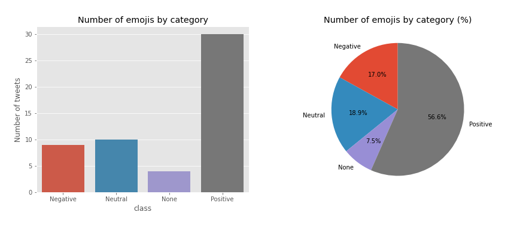
6.9 Unknown words analysis
Let’s detect all lemas that aren’t in the vocabulary
def ukn_cleaner(txt):
# print(txt)
pattern = re.compile('.*@\w+|http\w*|jaja*|.*\d|ha*ha*')
if bool(pattern.match(txt)) == False:
return txt
else:
return ''
# Words unknown
all_tokens = [' '.join(token) for token in df.tokens_jaja_es]
tokens_es = nlp_es(' '.join(all_tokens))
tokens_unknown = [ukn_cleaner(token.text) for token in tokens_es if token.is_oov and len(token.text) > 2]
# Words unknown by frequency
tokens_freq = counter(tokens_unknown)
tokens_unknown = list(set(tokens_unknown))
freq_tokens_unknown = [tokens_freq[token] for token in tokens_unknown]
df_unknown = pd.DataFrame({'tokens': tokens_unknown, 'freq': freq_tokens_unknown})
df_unknown = df_unknown[df_unknown.tokens != ''].sort_values(by = 'freq', ascending = False)
# print('There are {} tokens unknown'.format(len(tokens_unknown)))
df_unknown.head(10)
tokens freq
168 askalvarogango 3
194 hableconellas 3
104 gemeliers 2
66 felizmartes 2
90 vmas 2
42 niñuca 2
1 unicovy 1
145 mgw 1
137 sesiondeinvestidura 1
138 dep 1
7 Training the Naive-Bayes Model
7.1 Training with tokens in Spanish (Spacy stopwords)
X_tokens = [' '.join(tokens) for tokens in list(df.tokens_es)]
# print(X_tokens[0])
# acc = nbayes(X_tokens, target)
a @sosagraphs sencillo estilos crack puse aparte encargos y
Documents processed
Vectorizer Done
Starting trainning
------------------------------------------
precision recall f1-score support
0 0.40 0.99 0.57 72
1 0.00 0.00 0.00 31
2 0.00 0.00 0.00 31
3 0.68 0.25 0.37 68
accuracy 0.44 202
macro avg 0.27 0.31 0.23 202
weighted avg 0.37 0.44 0.33 202
------------------------------------------
accuracy 0.43564356435643564
/home/carlos/.local/lib/python3.6/site-packages/sklearn/metrics/_classification.py:1272: UndefinedMetricWarning: Precision and F-score are ill-defined and being set to 0.0 in labels with no predicted samples. Use `zero_division` parameter to control this behavior.
_warn_prf(average, modifier, msg_start, len(result))
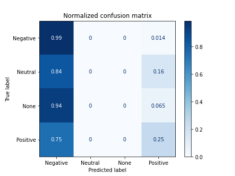
7.2 Training with tokens in English (Spacy stopwords)
X_tokenized_en = [' '.join(token) for token in list(df.tokens_en)]
print(X_tokenized_en[:2])
# acc = nbayes(X_tokenized_en, target)
['@sosagraphs commissions crack simple started styles time makes', 'confi 1477']
Documents processed
Vectorizer Done
Starting trainning
------------------------------------------
precision recall f1-score support
0 0.40 0.89 0.55 72
1 0.00 0.00 0.00 31
2 0.00 0.00 0.00 31
3 0.57 0.35 0.44 68
accuracy 0.44 202
macro avg 0.24 0.31 0.25 202
weighted avg 0.33 0.44 0.34 202
------------------------------------------
accuracy 0.43564356435643564
/home/carlos/.local/lib/python3.6/site-packages/sklearn/metrics/_classification.py:1272: UndefinedMetricWarning: Precision and F-score are ill-defined and being set to 0.0 in labels with no predicted samples. Use `zero_division` parameter to control this behavior.
_warn_prf(average, modifier, msg_start, len(result))
7.3 Training with tokens in English (selected stopwords)
X_tokenized_en_2 = [' '.join(lema) for lema in list(df['tokens_en*'])]
# print(X_tokenized_en_2[:2])
# acc = nbayes(X_tokenized_en_2, target)
['@sosagraphs commissions crack simple started styles because time makes', 'confi 1477 because']
Documents processed
Vectorizer Done
Starting trainning
------------------------------------------
precision recall f1-score support
0 0.40 0.92 0.56 72
1 0.00 0.00 0.00 31
2 0.00 0.00 0.00 31
3 0.65 0.35 0.46 68
accuracy 0.45 202
macro avg 0.26 0.32 0.25 202
weighted avg 0.36 0.45 0.35 202
------------------------------------------
accuracy 0.44554455445544555
/home/carlos/.local/lib/python3.6/site-packages/sklearn/metrics/_classification.py:1272: UndefinedMetricWarning: Precision and F-score are ill-defined and being set to 0.0 in labels with no predicted samples. Use `zero_division` parameter to control this behavior.
_warn_prf(average, modifier, msg_start, len(result))
7.4 Training with tokens in Spanish (selected stopwords)
X_tokenized_es_2 = [' '.join(lema) for lema in list(df['tokens_es*'])]
# print(X_tokenized_es_2[:2])
# acc = nbayes(X_tokenized_es_2, target)
['a porque @sosagraphs sencillo estilos crack puse aparte hacerlo encargos y', 'no confi 1477 porque']
Documents processed
Vectorizer Done
Starting trainning
------------------------------------------
precision recall f1-score support
0 0.42 0.97 0.59 72
1 0.00 0.00 0.00 31
2 0.00 0.00 0.00 31
3 0.76 0.41 0.53 68
accuracy 0.49 202
macro avg 0.30 0.35 0.28 202
weighted avg 0.41 0.49 0.39 202
------------------------------------------
accuracy 0.48514851485148514
/home/carlos/.local/lib/python3.6/site-packages/sklearn/metrics/_classification.py:1272: UndefinedMetricWarning: Precision and F-score are ill-defined and being set to 0.0 in labels with no predicted samples. Use `zero_division` parameter to control this behavior.
_warn_prf(average, modifier, msg_start, len(result))
7.5 Training with lemas in Spanish (selected stopwords)
X_lematized_es = [' '.join(lema) for lema in list(df.lemas_es)]
# print(X_lematized_es[:2])
# acc = nbayes(X_lematized_es, target)
['a porque @sosagraphs sencillo crack encargo estilo hacerlo apartar poner y', 'no confi 1477 porque']
Documents processed
Vectorizer Done
Starting trainning
------------------------------------------
precision recall f1-score support
0 0.41 0.97 0.58 72
1 0.00 0.00 0.00 31
2 0.00 0.00 0.00 31
3 0.84 0.40 0.54 68
accuracy 0.48 202
macro avg 0.31 0.34 0.28 202
weighted avg 0.43 0.48 0.39 202
------------------------------------------
accuracy 0.4801980198019802
/home/carlos/.local/lib/python3.6/site-packages/sklearn/metrics/_classification.py:1272: UndefinedMetricWarning: Precision and F-score are ill-defined and being set to 0.0 in labels with no predicted samples. Use `zero_division` parameter to control this behavior.
_warn_prf(average, modifier, msg_start, len(result))
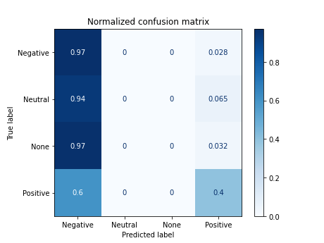
7.6 Training with lemas in English (selected stopwords)
X_lematized_en = [' '.join(lema) for lema in list(df.lemas_en)]
# print(X_lematized_en[:2])
# acc = nbayes(X_lematized_en, target)
['crack @sosagraph simple make start commission style because time', 'confi 1477 because']
Documents processed
Vectorizer Done
Starting trainning
------------------------------------------
precision recall f1-score support
0 0.39 0.89 0.54 72
1 0.00 0.00 0.00 31
2 0.00 0.00 0.00 31
3 0.65 0.35 0.46 68
accuracy 0.44 202
macro avg 0.26 0.31 0.25 202
weighted avg 0.36 0.44 0.35 202
------------------------------------------
accuracy 0.43564356435643564
/home/carlos/.local/lib/python3.6/site-packages/sklearn/metrics/_classification.py:1272: UndefinedMetricWarning: Precision and F-score are ill-defined and being set to 0.0 in labels with no predicted samples. Use `zero_division` parameter to control this behavior.
_warn_prf(average, modifier, msg_start, len(result))
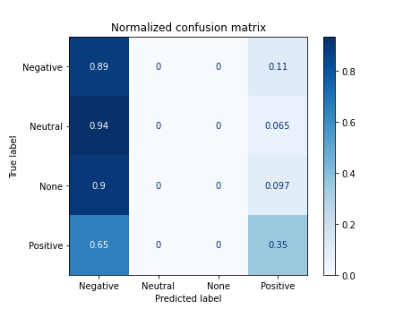
7.7 Training with the emojis description
X_tokens_emojis_es = [' '.join(token) + ' ' + ' '.join(emoji) for token, emoji in zip(df['tokens_es*'], df.emojis_es)]
# print(X_tokens_emojis_es[67])
# acc = nbayes(X_tokens_emojis_es, target)
pena meo bebemos antifas franco 😂 somos pantanos @ojerafarlopera hizo mira @aaron_np agua @nerea_rmcf93 y cara con lágrimas de alegrÃa cara con lágrimas de alegrÃa
Documents processed
Vectorizer Done
Starting trainning
------------------------------------------
precision recall f1-score support
0 0.42 0.97 0.59 72
1 0.00 0.00 0.00 31
2 0.00 0.00 0.00 31
3 0.78 0.41 0.54 68
accuracy 0.49 202
macro avg 0.30 0.35 0.28 202
weighted avg 0.41 0.49 0.39 202
------------------------------------------
accuracy 0.48514851485148514
/home/carlos/.local/lib/python3.6/site-packages/sklearn/metrics/_classification.py:1272: UndefinedMetricWarning: Precision and F-score are ill-defined and being set to 0.0 in labels with no predicted samples. Use `zero_division` parameter to control this behavior.
_warn_prf(average, modifier, msg_start, len(result))
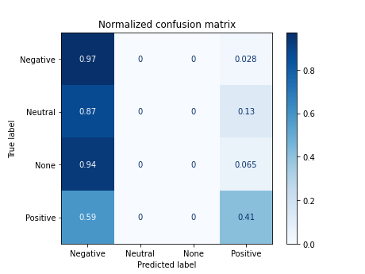
7.8 Training with tokens in Spanish with jaja normalized
X_tokenized_jaja_es = [' '.join(token) for token in list(df.tokens_jaja_es)]
# print(X_tokenized_jaja_es[:2])
# acc = nbayes(X_tokenized_jaja_es, target)
['a porque @sosagraphs sencillo estilos crack puse aparte hacerlo encargos y', 'no confi 1477 porque']
Documents processed
Vectorizer Done
Starting trainning
------------------------------------------
precision recall f1-score support
0 0.43 0.97 0.59 72
1 0.00 0.00 0.00 31
2 0.00 0.00 0.00 31
3 0.76 0.43 0.55 68
accuracy 0.49 202
macro avg 0.30 0.35 0.29 202
weighted avg 0.41 0.49 0.40 202
------------------------------------------
accuracy 0.4900990099009901
/home/carlos/.local/lib/python3.6/site-packages/sklearn/metrics/_classification.py:1272: UndefinedMetricWarning: Precision and F-score are ill-defined and being set to 0.0 in labels with no predicted samples. Use `zero_division` parameter to control this behavior.
_warn_prf(average, modifier, msg_start, len(result))
7.9 Training with tokens in English with jaja normalized
X_tokenized_jaja_en = [' '.join(token) for token in list(df.tokens_jaja_en)]
# print(X_tokenized_jaja_en[:2])
['@sosagraphs commissions crack simple started styles because time makes', 'confi 1477 because']
Documents processed
Vectorizer Done
Starting trainning
------------------------------------------
precision recall f1-score support
0 0.40 0.92 0.56 72
1 0.00 0.00 0.00 31
2 0.00 0.00 0.00 31
3 0.65 0.35 0.46 68
accuracy 0.45 202
macro avg 0.26 0.32 0.25 202
weighted avg 0.36 0.45 0.35 202
------------------------------------------
accuracy 0.44554455445544555
/home/carlos/.local/lib/python3.6/site-packages/sklearn/metrics/_classification.py:1272: UndefinedMetricWarning: Precision and F-score are ill-defined and being set to 0.0 in labels with no predicted samples. Use `zero_division` parameter to control this behavior.
_warn_prf(average, modifier, msg_start, len(result))

X_tokenized_jaja_hash_es = [' '.join(token) + ' ' + ' '.join(hash) for token, hash in zip(df.tokens_jaja_es, df.hash2tokens)]
# print(X_tokenized_jaja_hash_es[7])
# acc = nbayes(X_tokenized_jaja_hash_es, target)
@el_pais noticia @diego_fdm notasdelmisterio perfecta notas misterio
Documents processed
Vectorizer Done
Starting trainning
------------------------------------------
precision recall f1-score support
0 0.43 0.97 0.60 72
1 0.00 0.00 0.00 31
2 0.00 0.00 0.00 31
3 0.77 0.44 0.56 68
accuracy 0.50 202
macro avg 0.30 0.35 0.29 202
weighted avg 0.41 0.50 0.40 202
------------------------------------------
accuracy 0.49504950495049505
/home/carlos/.local/lib/python3.6/site-packages/sklearn/metrics/_classification.py:1272: UndefinedMetricWarning: Precision and F-score are ill-defined and being set to 0.0 in labels with no predicted samples. Use `zero_division` parameter to control this behavior.
_warn_prf(average, modifier, msg_start, len(result))
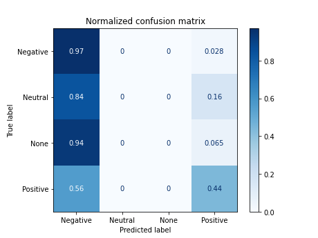
7.11 Results Naive-Bayes Model
df_results_bayes = df_results_bayes.sort_values(by='accuracy')
# df_results_bayes
model improve accuracy
0 n.bayes default tweets_en 0.400990
1 n.bayes tokens Spanish (Spacy stops) 0.435644
2 n.bayes tokens English (Spacy stops) 0.435644
6 n.bayes lemas in English (false stops) 0.435644
3 n.bayes tokens English (false stops) 0.445545
9 n.bayes tokens English (fs) & jaja 0.445545
5 n.bayes lemas Spanish (false stops) 0.480198
4 n.bayes tokens Spanish (false stops) 0.485149
7 n.bayes tokens in Spanish (ss) & emojis 0.485149
8 n.bayes tokens Spanish (fs) & jaja 0.490099
10 n.bayes tokens Spanish (fs) & jaja & hashtags 0.495050
([0, 1, 2, 3, 4, 5, 6, 7, 8, 9, 10], <a list of 11 Text major ticklabel objects>)
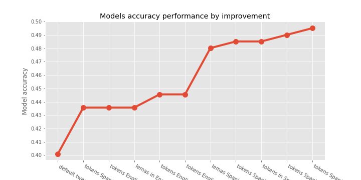
8 Training the SVM Model
8.1 SVM model function
from sklearn.svm import SVC
from sklearn.model_selection import GridSearchCV
def svm_model(X, Y):
labels = ['Negative', 'Neutral', 'None', 'Positive']
def basic_processing(X):
documents = []
for sen in range(0, len(X)):
document = str(X[sen])
documents.append(document)
return documents
documents = basic_processing(X)
print('Documents processed', '\n')
vectorizer = CountVectorizer()
X = vectorizer.fit_transform(documents).toarray()
# The data is divided into 20% test set and 80% training set.
X_train, X_test, y_train, y_test = train_test_split(X, y, test_size=0.2, random_state=0)
# Create the parameter grid based on the results of random search
params_grid = [{'kernel': ['rbf'], 'gamma': [1e-3, 1e-4],
'C': [1, 10, 100, 1000]},
{'kernel': ['linear'], 'C': [1, 10, 100, 1000]}]
clf = GridSearchCV(SVC(decision_function_shape='ovr'), params_grid, cv=5)
final_model = clf.fit(X_train, y_train)
# y_pred = final_model.predict(X_test)
# View the accuracy score
print('Best score for training data:', final_model.best_score_,"\n")
# View the best parameters for the model found using grid search
print('Best C:',final_model.best_estimator_.C,"\n")
c = final_model.best_estimator_.C
kernel = final_model.best_estimator_.kernel
gamma = final_model.best_estimator_.gamma
print('Best Kernel:',final_model.best_estimator_.kernel,"\n")
print('Best Gamma:',final_model.best_estimator_.gamma,"\n")
final_model = final_model.best_estimator_
y_pred = final_model.predict(X_test)
# print(confusion_matrix(y_test,y_pred))
# print("------------------------------------------")
# print(classification_report(y_test,y_pred))
# print("------------------------------------------")
# print("accuracy",accuracy_score(y_test, y_pred))
acc = accuracy_score(y_test, y_pred)
return acc, kernel, c, gamma
8.2 Training SVM for all NLP
nlps = [tweets_es, X_tokens, X_tokenized_en, X_tokenized_en_2, X_tokenized_es_2, X_lematized_es, X_lematized_en, X_tokens_emojis_es, X_tokenized_jaja_es, X_tokenized_jaja_es, X_tokenized_jaja_hash_es]
labels = ['default tweets_es', 'tokens Spanish (Spacy)', 'tokens English (Spacy)','tokens English (false stops)' ,'tokens Spanish (false stops)', 'lemas Spanish (false stops)', 'lemas English (false stops)', 'tokens Spanish (fs) & emojis', 'tokens Spanish (fs) & jaja', 'tokens English (fs) & jaja', 'tokens Spanish (fs) & jaja & hashtag']
df_results_svm = pd.DataFrame({'model': [], 'improve': [],'accuracy': [] ,'parameters': []})
for nlp, label in zip(nlps, labels):
acc = svm_model(nlp, target)
df_results_svm = df_results_svm.append({'model': 'SVM', 'improve': label, 'accuracy': acc[0], 'parameters': acc[1:]}
, ignore_index=True);
df_results_svm = df_results_svm.sort_values(by='accuracy')
# df_results_svm
model improve accuracy parameters
1 SVM tokens Spanish (Spacy) 0.430693 (rbf, 1000, 0.0001)
0 SVM default tweets_es 0.445545 (rbf, 1000, 0.0001)
2 SVM tokens English (Spacy) 0.450495 (rbf, 1000, 0.0001)
4 SVM tokens Spanish (false stops) 0.514851 (rbf, 100, 0.001)
8 SVM tokens Spanish (fs) & jaja 0.519802 (rbf, 100, 0.001)
9 SVM tokens English (fs) & jaja 0.519802 (rbf, 100, 0.001)
10 SVM tokens Spanish (fs) & jaja & hashtag 0.519802 (rbf, 100, 0.001)
6 SVM lemas English (false stops) 0.524752 (rbf, 1000, 0.0001)
7 SVM tokens Spanish (fs) & emojis 0.524752 (rbf, 100, 0.001)
5 SVM lemas Spanish (false stops) 0.529703 (rbf, 100, 0.001)
3 SVM tokens English (false stops) 0.539604 (rbf, 100, 0.001)
8.3 Results SVM Model
([0, 1, 2, 3, 4, 5, 6, 7, 8, 9, 10], <a list of 11 Text major ticklabel objects>)
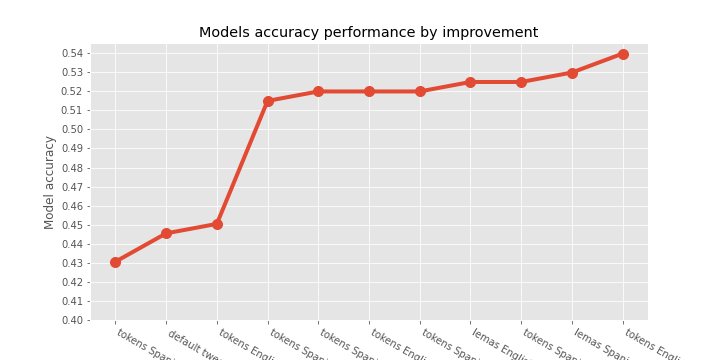
import math
# Plotting data
labels = ['tokens Spanish (Spacy)', 'default tweets_es', 'tokens English (Spacy)','tokens Spanish (false stops)' ,'tokens Spanish (fs) & jaja', 'tokens English (fs) & jaja', 'tokens Spanish (fs) & jaja & hashtag', 'lemas English (false stops)', 'tokens Spanish (fs) & emojis', 'lemas Spanish (false stops)', 'tokens English (false stops)']
svm = [0.430693, 0.445545, 0.450495, 0.514851, 0.519802, 0.519802, 0.519802, 0.524752, 0.524752, 0.529703, 0.539604]
bayes = [0.435644, 0.400990, 0.435644, 0.485149, 0.490099, 0.445545, 0.495050, 0.435644, 0.485149, 0.480198, 0.445545]
(array([ 0, 1, 2, 3, 4, 5, 6, 7, 8, 9, 10]), <a list of 11 Text major ticklabel objects>)
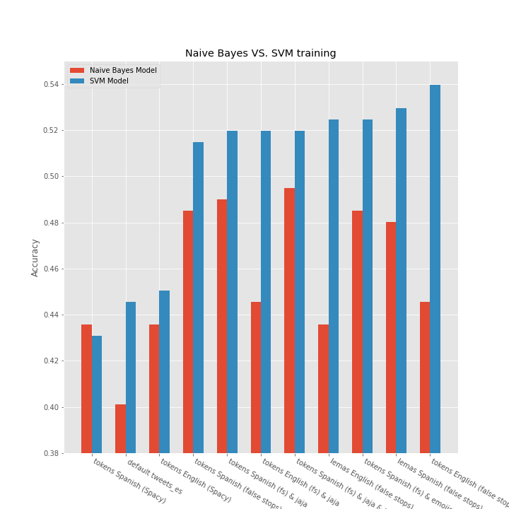
References & other links
- You can check the repository here
{kind=link}
{kind=link}
{kind=link}
{kind=link}
{kind=link}
{kind=link}
{kind=link}
{kind=link}
{kind=link}
{kind=link}
{kind=link}
{kind=link}
{kind=link}
{kind=link}
{kind=link}
{kind=link}
{kind=link}
{kind=link}
{kind=link}
{kind=link}
{kind=link}